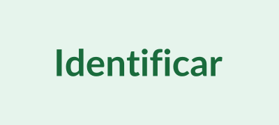
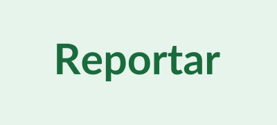
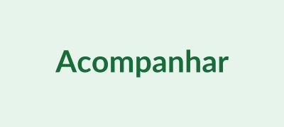
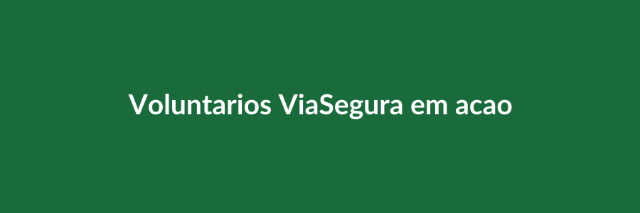

+1.200
Ocorrências mapeadas em 2024
A ViaSegura mobiliza comunidades para identificar e reportar buracos, fios caídos e riscos nas vias públicas — acelerando os reparos e salvando vidas.
Quero ser voluntárioAtuamos como ponte entre cidadãos e o poder público. Através de mapeamento colaborativo, treinamentos comunitários e pressão institucional, reduzimos o tempo de resposta para reparos urgentes nas vias.
Ocorrências mapeadas em 2024
Reparos concluídos após denúncias
Cobertos pela rede de voluntários

Voluntários fotografam e localizam buracos, fios caídos e outros riscos nas ruas.

O registro é enviado ao nosso sistema e encaminhado à prefeitura com evidências.

A comunidade monitora o prazo de reparo e cobra respostas quando necessário.

Fundada em 2021 por moradores afetados por acidentes causados por infraestrutura urbana degradada, a ViaSegura nasceu da indignação e se transformou em ação. Somos uma organização sem fins lucrativos registrada, apartidária e financiada exclusivamente por doações e editais públicos.
Nossa equipe é formada por engenheiros civis, advogados, desenvolvedores e, principalmente, cidadãos comuns que acreditam que cobrar do poder público é um ato de cidadania — não de confronto.